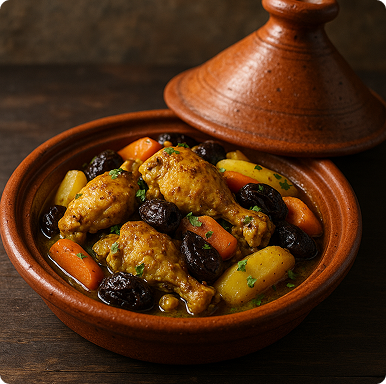

Marruecos
""Cocina especiada con historia milenaria."
Platos destacados: Cuscús, tajine, harira, bastilla.



África ofrece una cocina diversa, rica en colores, especias y tradiciones. Desde los guisos aromáticos del norte hasta los sabores intensos del centro y sur del continente, descubrí la esencia de una cultura vibrante a través de su comida.
""Cocina especiada con historia milenaria."
Platos destacados: Cuscús, tajine, harira, bastilla.
"Comer con las manos, compartir con el alma."
Platos destacados: Injera, doro wat, shiro, kitfo.
"Una fusión de culturas en cada bocado."
Platos destacados: Bobotie, biltong, chakalaka, bunny chow.
"Una tierra de especies raices y tradiciones ancestrales. Su cocina celebra ingredientes locales y sabores intensos.”
Platos destacados: Couscous (Marruecos), Jollof rice (Nigeria), Injera (Etiopía), Moambe (Congo), Bunny chow (Sudáfrica)